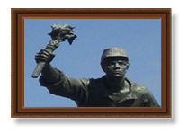
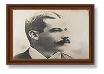
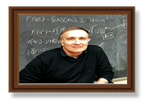
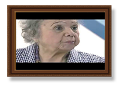

Personajes de Nuestra Patria
Juan Santamaria: (Alajuela, Costa Rica, 29 de agosto de 1831 - Rivas, Nicaragua, 11 de abril de 1856) es uno de los dos héroes nacionales reconocidos oficialmente por Costa Rica, junto al expresidente Juan Rafael Mora Porras. Se le atribuye la quema del llamado Mesón de Guerra en Rivas (Nicaragua) durante la batalla del mismo nombre, el 11 de abril de 1856, en el marco de la Campaña Nacional de 1856-1857 y la Guerra Nacional de Nicaragua. En dicho mesón, se encontraban los filibusteros comandados por el estadounidense William Walker. En ese acto heroico, que contribuyó a que los costarricenses lograsen ganar la batalla, perdió la vida. No fue sino hasta 35 años más tarde, en 1891, cuando se le empezó a idealizar como héroe nacional en medio de una época determinante para la consolidación de la identidad costarricense. El 15 de septiembre de aquel 1891 se inauguró la estatua de bronce del escultor francés Aristide Croisy en el Parque Juan Santamaría de Alajuela. Después se ha bautizado con su nombre al principal aeropuerto del país, al Museo Histórico Cultural de la citada ciudad, y se le han consagrado obras literarias, musicales y de artes plásticas, además de múltiples estudios de carácter histórico, en parte motivados porque, a lo largo de los años, algunas personas se han cuestionado su existencia. El 11 de abril de 2011 marca la fecha en la cual Juan Santamaría es oficialmente declarado por las autoridades costarricenses como héroe nacional, a pesar de que la fiesta cívica en honor al soldado alajuelense se venía celebrando en el país ritualmente desde 1915. Para muchos costarricenses, Juan Santamaría representa el vivo espíritu nacional en la forma de un joven de cuna humilde que está dispuesto a dar la vida por la libertad de su pueblo y de su país.
Reconocimiento y Recuerdo: El reconocimiento de los méritos de Juan Santamaría como héroe de la Campaña Nacional de 1856-1857 surgió casi treinta años después de su hazaña en 1885 El 25 de abril de 1885, se bautizan dos embarcaciones de guardacostas con los nombres de ...MORA, en honor a los ilustres mandatarios de ese apellido y JUAN SANTAMARIA, en memoria del heroico soldado de Alajuela."
Aquilo Echeverría: (San José, Costa Rica, 22 de marzo de 1866 - Barcelona, 11 de marzo de 1909) fue un escritor, periodista y político costarricense. Poeta de exquisita sensibilidad artística, es una de las figuras más importantes de la historia literaria de este país, al punto que se le considera "el poeta nacional de Costa Rica". Su obra más conocida, Concherías (1905), refleja la vida, el pensamiento, las costumbres y el lenguaje de los campesinos costarricenses. Los Premios Nacionales de Costa Rica por la creación de obras en las áreas de poesía, cuento, novela, ensayo, teatro, historia, libro no ubicable, artes plásticas y música llevan su nombre. Es Benemérito de las Letras Patrias desde 1949. Fue bautizado con el nombre de Adolfo Dolores Aquileo de la Trinidad Echeverría Zeledón. Sus padres fueron Aquileo Echeverría y Trinidad Zeledón. El 1 de septiembre de 1885 se casó en Heredia con María Dolores Flores Zamora. Participó en la campaña militar contra el Presidente Justo Rufino Barrios de Guatemala, quien pretendía restablecer la unión centroamericana. Al finalizar la campaña se estableció en Nicaragua, al servicio del Presidente Adán Cárdenas del Castillo. Fue en ese país donde conoció y entabló amistad con el poeta Rubén Darío, quien posteriormente escribiría: y Costa Rica tiene un Poeta. Tiene, en verdad, otros poetas, pero SU poeta, el poeta nacional, el poeta familiar se llama Aquileo J. Echeverría
Guy de Téramond Peralta: Catedrático, Universidad de Costa Rica, San José, Costa Rica. Diploma de Estudios Superiores en Física Teórica, Instituto Henri Poincaré, París (1968). Doctorado de III ciclo en Ciencias Físicas, Universidad de París VI (Pierre et Marie Curie) (1973). Doctorado de Estado en Ciencias Físicas, Universidad de París XI (Orsay) (1977). Guy de Téramond enfoca su área de investigación en Física Nuclear y Física de Altas Energías. Ha estudiado las propiedades de las fuerzas nucleares, las colisiones de protones de alta energía, la física de giro y el origen de la quiralidad y la estructura del grupo de teorías de gran unificación. En una colaboración conjunta con científicos de las Universidades de Lausanne, Munich y Zurich, las pruebas fueron encontradas en 1980 por el cargo de ruptura de la simetría de las fuerzas nucleares. En colaboración con S.J. Brodsky (Stanford) y I. Schmidt (U. Santa María, Chile), se estudió en 1990 las propiedades de una nueva forma de material nuclear catalizada por quarks pesados. Las investigaciones actuales se centran en el régimen de acoplamiento fuerte de QCD usando holografía de luz delantera, un marco concebido en el 2006 con S.J. Brodsky, para asignar una teoría de confinamiento calibre cuantificada en la luz frontal para un mayor espacio AdS utilizando la AdS/ CFT (calibre/peso) correspondencia. Además, fue responsable del proyecto de interconexión de Costa Rica a la Red Internet (1993). Establece desde el Ministerio de Ciencia y Tecnología la Red Internet Avanzada del ICE, que constituye la red de infraestructura actual de la Red Internet en Costa Rica. Ha recibido los siguientes reconocimientos: Premio John Simon Guggenheim (1986), Premio de Investigación Fulbright (1988), Premio Nacional de Ciencia y Tecnología Clodomiro Picado Twight por su trabajo “Determinación de las fuerzas entre neutrones” (1977-1978), Leonid Medallion (1997) y Aportes Grant, Florida Ice & Farm (2006).
Carmen Granados Soto: Nace en San José, el 26 de abril de 1915. Muere el 19 de abril de 1999. Sus padres impulsaron su carrera artística. Recibió además un gran apoyo de su maestra Auristela Castro y conoce, a don Aquileo J. Echeverría, el costumbrista. Es así como llevó a escena las Concherías, género literario popular campesino, al cual tomó gran aprecio. A sus quince años Carmen Granados quedó huérfana y abandonó sus estudios para dedicarse a trabajar. Trabajó como dependiente en una farmacia, al mismo tiempo que trabajaba en la radio con su hermano Efraín Granados Soto, conocido como Pillín Granados. Formó con él el conjunto radial llamado Grupo Cuadro Roxi. Su primer personaje cómico en la radio fue junto al Concho Vindas y Evangelista Fonseca; de ahí nació la famosa Rafela.